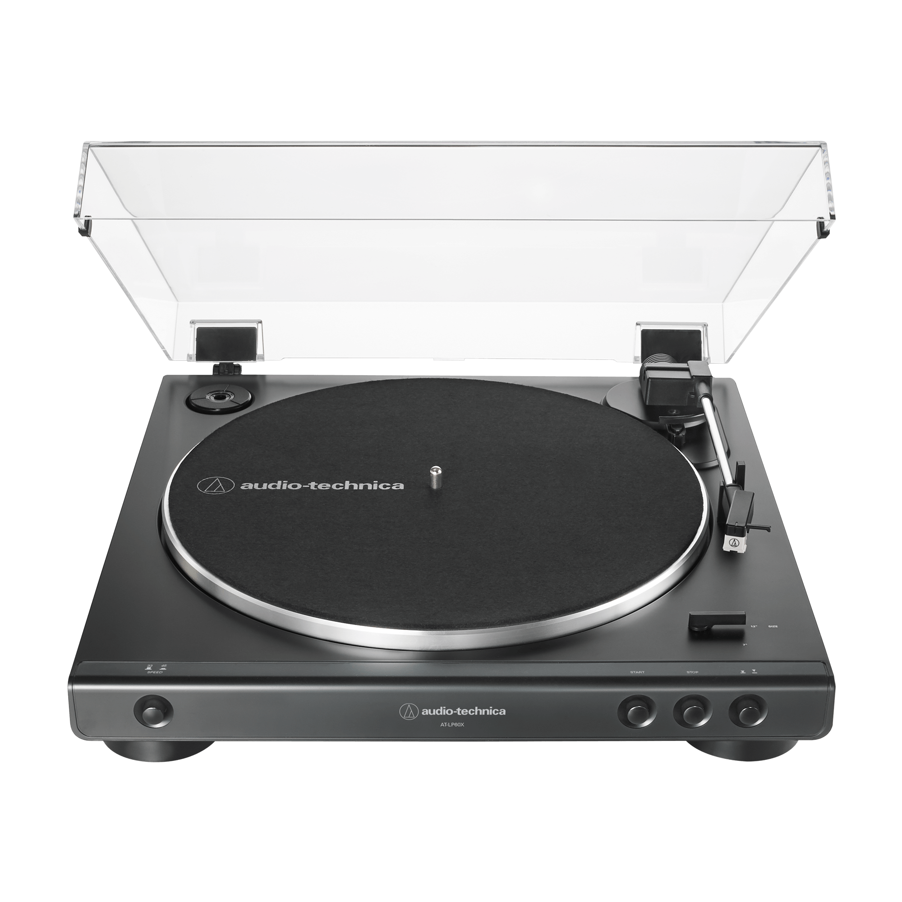

I've just got a vinyl player a couple of months ago, so picked up this hobby pretty recently. But it was something that I was planning for a long time. This is to get your hopes down in case you were expecting any pro information xD.
The turntable I use is an Audio-Techncica ATLP60X, which is reputed as a good choice for beginners.
Naturally, I've been quickly expanding my vinyl collection. You can check it out here. To get vinyls I often use Discogs, a website where members can buy and sell vinyls between each other. It has a great selection of vinyls. Check for yourself by searching for something in the form below.